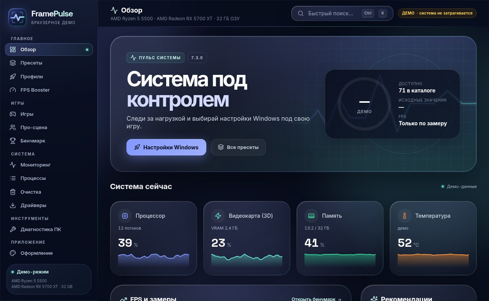

НАСТРОЙКИ WINDOWS
FPS Booster
Игровой режим, ввод, питание, фоновые приложения и службы. Доступные пункты переключаются через Windows. Рискованные изменения требуют подтверждения.
Посмотреть каталогВЕРСИЯ 7.3.0 WINDOWS x64
Меняй настройки Windows, измеряй FPS и следи за нагрузкой. FramePulse показывает, что изменилось, и позволяет вернуть исходные значения.
Windows 10 22H2 и Windows 11 · 68 МиБ · Бесплатно

01 / ВОЗМОЖНОСТИ
Меняй параметры по одному или пакетом. Недоступные настройки показаны отдельно, а запрос на изменение не выдаётся за прирост FPS.
НАСТРОЙКИ WINDOWS
Игровой режим, ввод, питание, фоновые приложения и службы. Доступные пункты переключаются через Windows. Рискованные изменения требуют подтверждения.
Посмотреть каталогИГРОВОЙ СЧЁТЧИК
Счётчик кадров вывода через PresentMon. Выбирай положение, размер и прозрачность. Для оконного и безрамочного режима.
АНАЛИЗ ПК
Запись нагрузки CPU, GPU и памяти, сравнение прогонов и CSV. Отдельно — поиск доступных драйверов через Windows Update.
02 / РЕЛИЗЫ
На сайте можно скачать текущий установщик. Обновлятор внутри приложения ещё не выпущен.
7.3.0 ТЕКУЩАЯ ВЕРСИЯ
58 новых настроек: планировщик, питание, ввод, службы и фоновые приложения.
7.2.0 ПРЕДЫДУЩАЯ ВЕРСИЯ
Подтверждения в стиле FramePulse, проверка после записи и вычислительный тест CPU вместо демо-бенчмарка.
03 / ПЕРЕД УСТАНОВКОЙ
Windows 11 x64 или Windows 10 22H2 x64. Нужен Microsoft Edge WebView2 Runtime. Если его нет, установщик предложит открыть страницу загрузки Microsoft.
Нет. Результат зависит от игры, железа и исходных настроек. Лучше менять один параметр за раз и сравнивать замеры одной и той же сцены.
Установщик находит прежнюю установку и сохраняет профиль, оформление и резервные копии твиков. Перед обновлением закрой FramePulse.
Можно посмотреть интерфейс и каталог. Демо не меняет Windows, не сканирует диск и не завершает процессы.
FRAMEPULSE / 7.3.0
Установщик для Windows x64. Цифровой подписи Windows нет; SmartScreen может показать предупреждение.